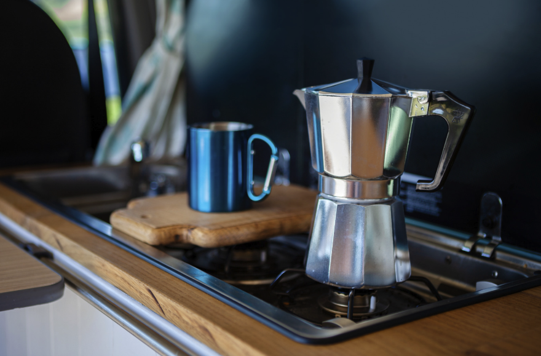
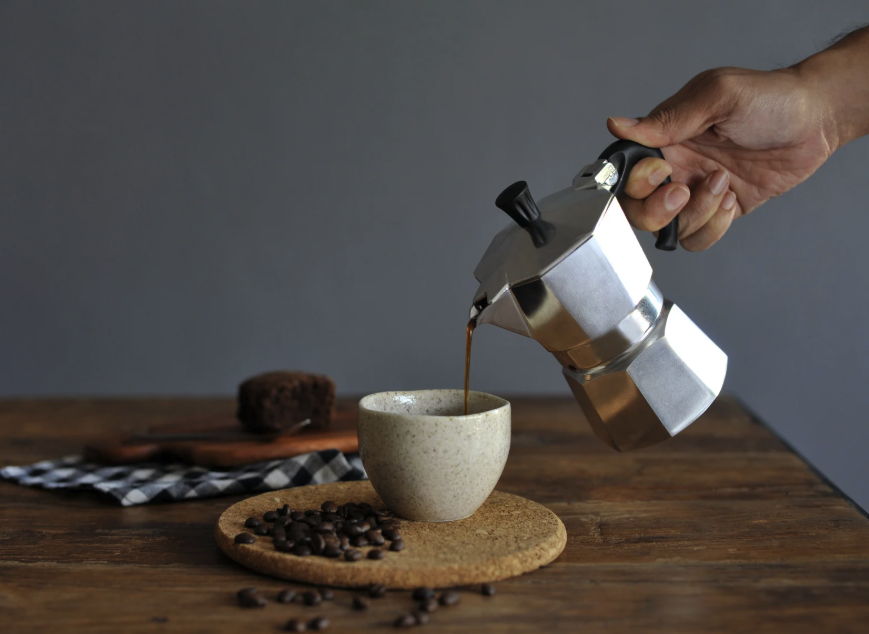

Materiaal: Aluminium vs Roestvrij Staal
De keuze tussen aluminium en roestvrij staal (RVS) is vaak de belangrijkste beslissing. Beide hebben hun voor- en nadelen.
Aluminium

✓ Voordelen
- Lichter gewicht (300-400g)
- Snellere opwarming
- Traditioneel en authentiek
- Goedkoper (€25-50)
- Betere warmtegeleiding
✗ Nadelen
- Niet geschikt voor inductie
- Kan verkleuren door koffie
- Gevoeliger voor krassen
- Vereist meer zorgvuldig onderhoud
Roestvrij Staal (RVS)
✓ Voordelen
- Inductiegeschikt
- Duurzamer en krasbestendiger
- Hygiënischer
- Moderne uitstraling
- Makkelijker schoon te maken
✗ Nadelen
- Zwaarder (500-700g)
- Langere opwarmtijd
- Duurder (€40-80)
- Minder traditioneel
🎯 Onze aanbeveling
Kies aluminium als: Je een traditionele ervaring wilt, geen inductiekookplaat hebt, en budget belangrijk is.
Kies RVS als: Je een inductiekookplaat hebt, gemak van onderhoud waardeert, of een moderne uitstraling prefereert.
De juiste grootte kiezen
Percolators werken het beste wanneer ze vol gevuld worden. Kies daarom een maat die past bij je dagelijkse koffieconsumptie.
| Maat | Inhoud | Voor wie? | Prijs range |
|---|---|---|---|
| 1-2 kopjes | 50-100ml | Alleenstaanden, zeldzaam gebruik | €20-40 |
| 3 kopjes | 150ml | Koppels, dagelijks gebruik | €25-90 |
| 6 kopjes | 300ml | Gezinnen, kantoor | €35-120 |
| 9+ kopjes | 450ml+ | Grote gezinnen, evenementen | €50-200 |
💡 Praktische tips
- Tel het aantal dagelijkse koffiedrinkers
- Reken op 50ml per "kopje"
- Kies liever iets groter dan te klein
- Overweeg een tweede percolator voor gasten

Kookplaat compatibiliteit
Niet elke percolator werkt op elke kookplaat. Hier is wat je moet weten:
Inductiekookplaten
Inductie werkt alleen met magnetische materialen. Test dit met een magneet op de bodem van de percolator.
✅ Werkt wel:
- Roestvrij staal (RVS)
- Gietijzer
- Geëmailleerd staal
❌ Werkt niet:
- Aluminium
- Koper
- Glas
Andere kookplaten
Gas, elektrisch en keramisch werken met alle materialen.
🔥 Gas
Ideaal voor percolators. Snelle temperatuurcontrole en traditioneel.
⚡ Elektrisch
Werkt goed, maar langzamer dan gas. Let op vlakke bodem.
🔲 Keramisch
Vergelijkbaar met elektrisch. Zorg voor schone bodem.
🧲 Inductie test: Magneet methode
Test met een magneet op de bodem: plakt het? Dan werkt het op inductie!
🎯 Onze aanbeveling
Heb je inductie? Kies voor RVS modellen zoals de Bialetti Venus.
Andere kookplaten? Aluminium modellen zoals de Bialetti Fiammetta zijn perfect.
Budget bepalen
Goede percolators zijn er in alle prijsklassen. Hier is wat je kunt verwachten:
€20-40
Budget klasse
- Basis aluminium modellen
- Kleinere merken
- 1-3 kopjes meestal
- Functioneel maar basic
Voor wie: Beginners, zelden gebruik
€40-70
Middenklasse
- Bialetti, Grosche
- RVS opties beschikbaar
- Alle maten
- Goede kwaliteit
Voor wie: Dagelijkse koffiedrinkers
€70+
Premium klasse
- Alessi, premium Bialetti
- Design modellen
- Bijzondere materialen
- Collector's items
Voor wie: Design liefhebbers
Merken vergelijken
🏆 Merk vergelijking: Traditie vs Design
Links: Bialetti (traditie & functionaliteit) | Rechts: Alessi (design & exclusiviteit)
Bialetti
De oorspronkelijke uitvinder van de moderne percolator (1933). Italiaans merk met uitstekende reputatie.
- Sterktes: Kwaliteit, traditie, breed assortiment
- Prijsrange: €25-80
- Best sellers: Moka Express, Venus, Fiammetta
Alessi
Italiaans designmerk bekend om iconische keukenproducten. Focus op design en vormgeving.
- Sterktes: Design, exclusiviteit, kwaliteit
- Prijsrange: €80-200
- Best sellers: Pulcina, 9090
Beslissingshulp: Vind jouw perfecte percolator
Snel kiezen in 3 stappen
Stap 1: Heb je inductie?
Stap 2: Hoeveel kopjes per dag?
1-2 kopjes
Kies 3-kops model
3-4 kopjes
Kies 6-kops model
5+ kopjes
Kies 9-kops model
Stap 3: Wat is je budget?
€25-40
Basis modellen
€40-70
Premium kwaliteit
€70+
Design modellen
Onze top aanbevelingen

Gerelateerde gidsen
Zo houd je je percolator in topconditie
Wat zijn de verschillen?
Alle modellen getest en vergeleken